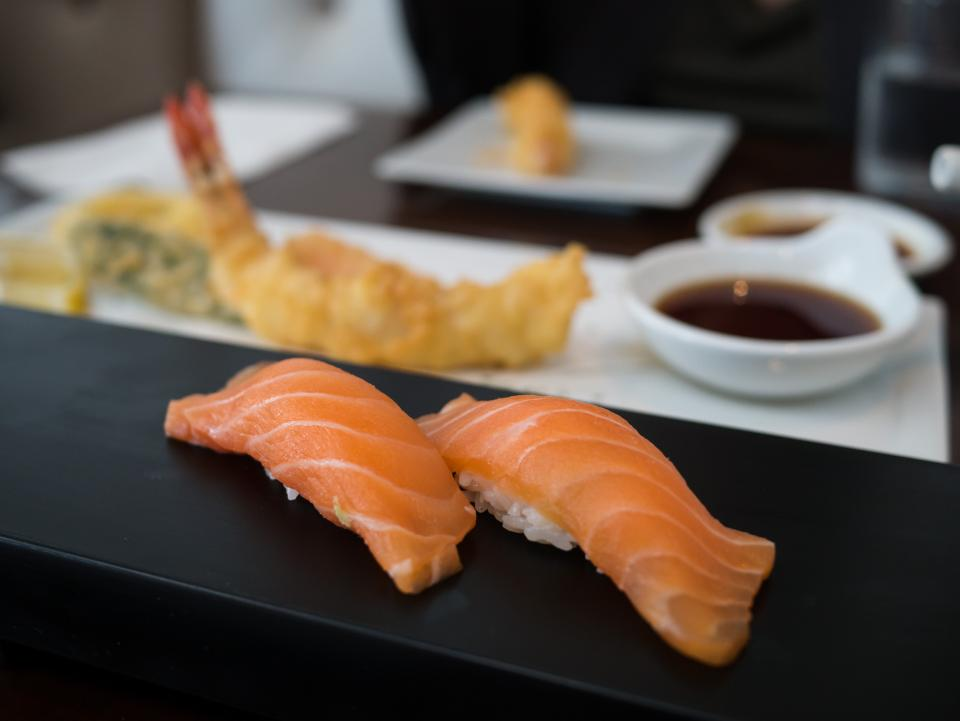

知る人ぞ知る、取手駅前の隠れ家
取手駅から歩いてすぐ。けれど、教えられなければ通り過ぎてしまうかもしれません。Brasserie minetteは、取手プラザという雑居ビルの2階に、あえて控えめな看板でたたずむビストロです。
一歩、階段をのぼってドアを開ければ、そこはワインレッドの椅子と真鍮の灯りが迎える、静かで大人な空間。気づいた人だけが辿り着ける──そんな「隠れ家」の時間を、取手の街の中心でご用意しています。
扉の先にある、3つの時間
Step 1 ─ Discover
見つける
取手プラザの階段をのぼる、その数十秒。看板の小ささに「ここで合っているだろうか」と少し立ち止まる、あの高揚感こそが、Brasserie minetteの前菜のようなものです。
Step 2 ─ Taste
味わう
ハーブ衣でカリッと焼き上げたラムチョップ。旨みの深い赤身ステーキ。濃厚デミグラスをまとった牛タンシチューハンバーグ。肉とパスタを主役に据えた、大人のビストロ料理がここにあります。
Step 3 ─ Relax
寛ぐ
間接照明が真鍮の什器をやわらかく照らす店内。細部にまで設計者のセンスが行き届いた空間で、気さくなシェフとスタッフの気配りに包まれながら、ゆっくりと寛いでください。
4.3 / 5.0(Google評価 78件)
実際にご来店いただいたお客様から、こんな声をいただいています。(Googleクチコミより要約引用)
「行くたびに、もう次は何を食べようかと考えてしまう店です。」
── Googleクチコミより「店内は設計者のセンスが随所に散りばめられていて、居心地がとてもいい。」
── Googleクチコミより「ラムチョップは臭みがまったくなく、驚くほど柔らかくてジューシーでした。」
── Googleクチコミより今夜、隠れ家へ。
看板は控えめですが、扉の先はいつも温かく灯っています。ご予約はお電話にて承っております。
営業時間・定休日は現在確認中です。正式サイト公開時には最新情報を掲載いたします。
PHOTO SAMPLE(フリー素材によるイメージ写真)
